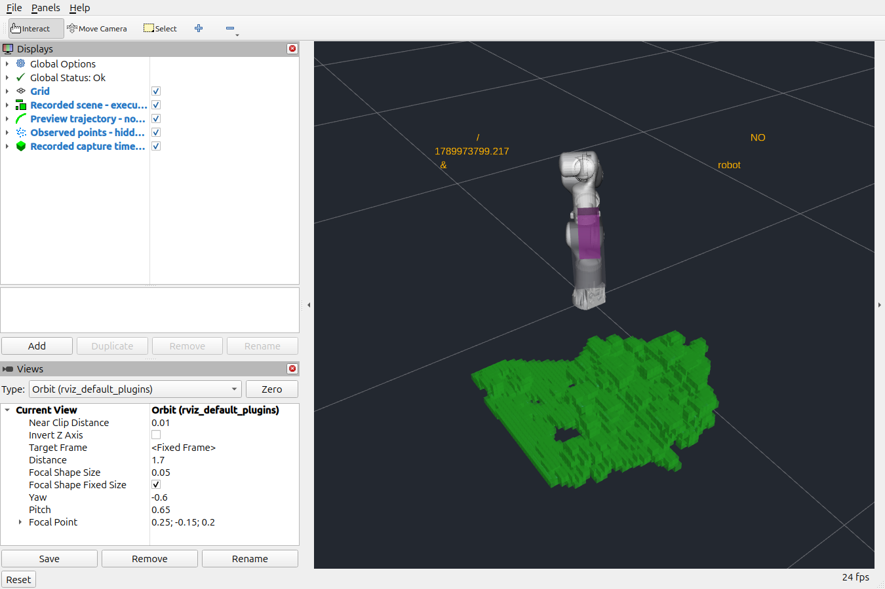
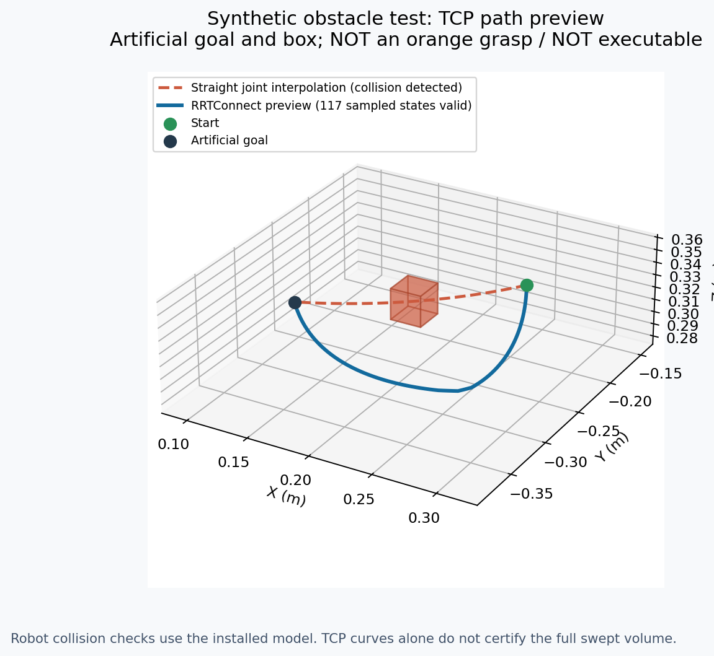

开发副本已具备 RGB-D 表面建模、独立 MoveIt 场景写入/读回以及仅规划接口。历史数据和合成障碍验证通过；当前橘子完整定位、同步基座坐标和实物避障抓取仍未验收。没有机械臂或夹爪动作，实际运行目录未部署。
| 项目 | 结果 | 证据 |
|---|---|---|
| 回归测试 | 新增23项 + 原72项，共95项通过 | tests_final.log |
| 最近保存的橘子帧 | 9/21 15:10:16，只有相机坐标；生成6,924个体素 | latest_camera_scene/quality.json |
| 同帧全帧识别 | 0检出 | latest_camera_detection/diagnostic.json |
| 现有56裁块识别策略 | 最高0.51435，但掩膜仅橘子右侧1037像素片段 | latest_camera_detection/tiled_diagnostic.json |
| 带同步姿态的历史帧 | 9/21约14:56；基座系3,071体素，原始RGB中无可靠橘子目标 | registered_replay/scene.json |
| MoveIt写入/读回 | 全场景摘要一致，相机盒存在，录制起点在已观测模型中有效 | moveit_readback_01.json / .readback.json |
| 合成绕行 | 25mm障碍盒使直连21点中的13点碰撞；RRTConnect绕行117个插值点有效 | synthetic_planning/report.json |
| 全阻挡输入 | 起终状态碰撞，plan-only动作拒绝；并非证明所有通道皆不可达 | synthetic_planning/full_block.action_result.json |
| 场景恢复 | 只删2个合成ID，完整摘要恢复，历史障碍与附着体保持 | synthetic_planning/restored_scene.json |
| 当前采集条件 | 本轮枚举无相机，不能把旧帧当作实时画面 | current_capture_attempt.json |
基座系历史场景摘要：1101fe65ce79cd4343c1182ad9bedecbe01e8e03b8b1b1aaff1996dfe86f8384。写入的是实际MoveIt碰撞对象，截图如下（历史回放，非当前画面）：

合成验证的TCP路线只用于检查规划与碰撞链条；人工终点、人工盒子均不能替代橘子预抓取候选：

相机看到的有效表面全部进入碰撞模型，包含桌面、枝叶和果体；不因目标检测框删除枝叶。遮挡背后、无效深度、视野及建模范围外保持未知。尚无树干/树枝/树叶语义分类，叶片暂按不可穿越处理。
基座转换要求拍摄时间被真实控制器前后读取夹持、姿态稳定、手眼/光学变换链一致、有机器人模型哈希。仅RGB-D资料绝不借用别时刻姿态拼出基座坐标。过期资料只允许在本机隔离域87作标记清楚的回放；所有结果executable=false。
当前writer只增/保留，不自动删除旧障碍；已有同ID的几何变化拒绝。纯函数已支持整格自由观测证据，连续场景更新尚未接入。新模块保留其他对象、ACM和附着体；场景规范化摘要覆盖world/attached/ACM/Octomap/固定变换/缩放与膨胀。
使用说明：apple_pick_v2/README_自动障碍预览.md。代码与配置哈希见validation_manifest.json。